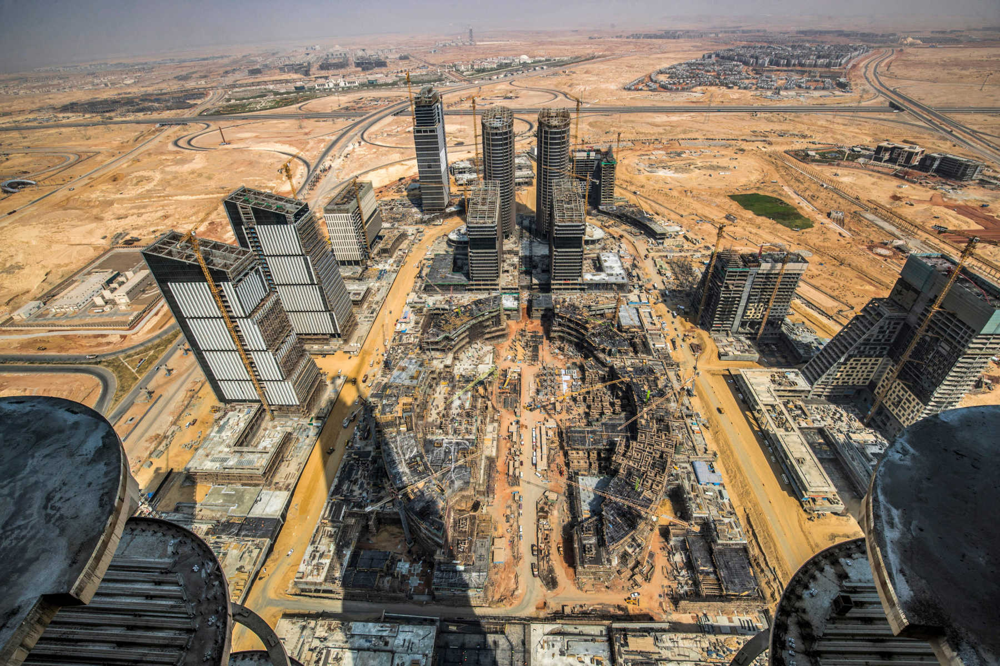
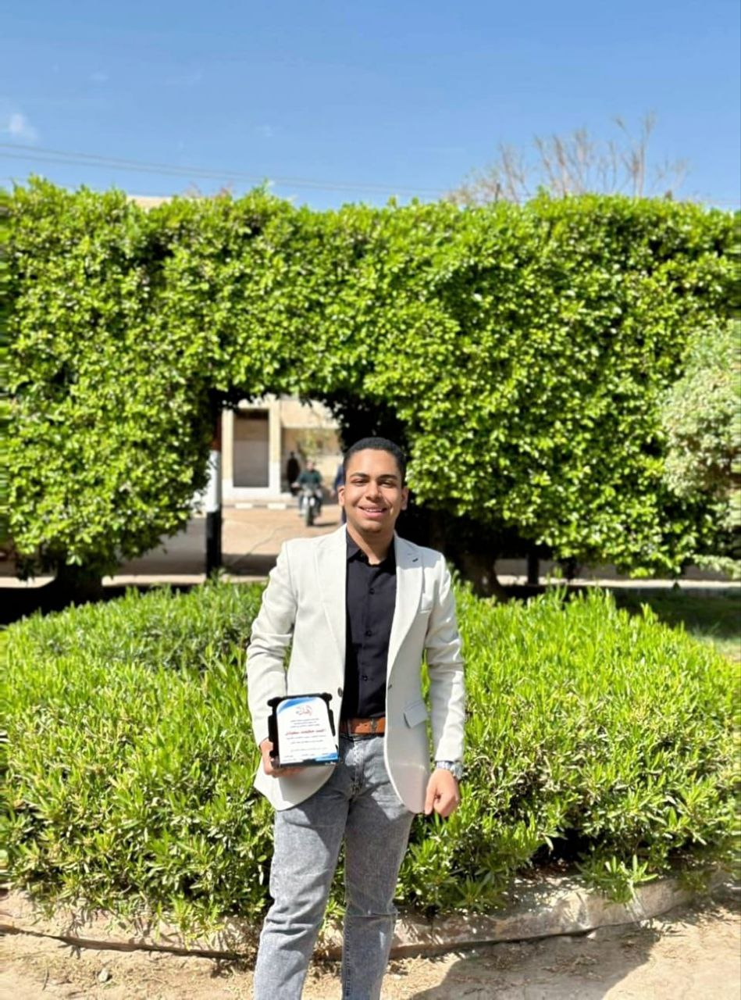
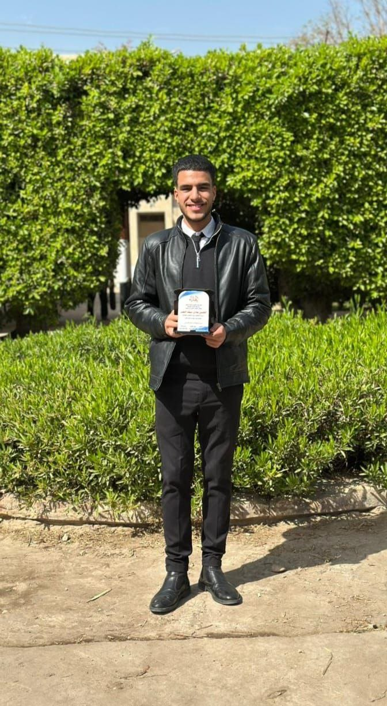
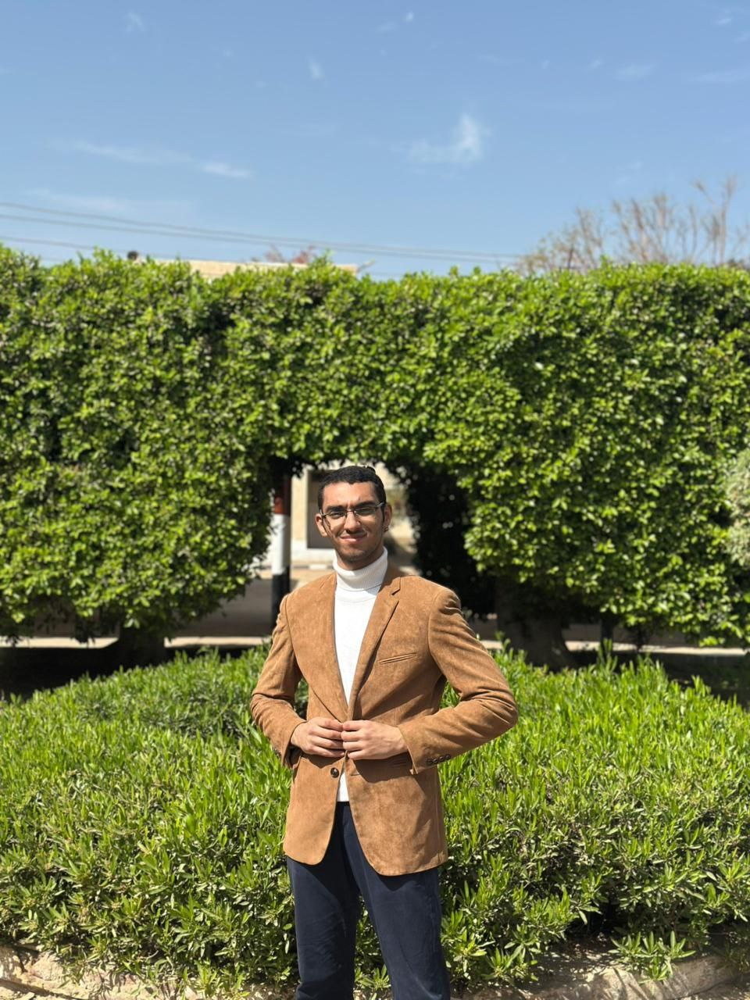

الرؤية
التنمية المستدامة.. نحو جمهورية جديدة
رؤية مصر ٢٠٣٠
رؤية مصر ٢٠٣٠ هي أجندة وطنية طموحة لتحقيق التنمية المستدامة وتوطينها شاملة أبعاد اقتصادية واجتماعية وبيئية، لتكون بمثابة وثيقة حية مرنة تواكب المتغيرات المحلية والدولية
العدالة الاجتماعية
بناء مجتمع عادل ومتكافئ وتوفير الحماية الاجتماعية الشاملة
الاستدامة البيئية
الحفاظ على الموارد الطبيعية ودعم التحول نحو الاقتصاد الأخضر
الاقتصاد التنافسي
بناء اقتصاد قوي ومتنوع يحقق نمواً مستداماً
التحول الرقمي
ميكنة جميع الخدمات الحكومية وبناء مصر الرقمية
التعليم والتدريب
تطوير منظومة التعليم والتدريب لبناء الإنسان المصري
الصحة والحماية
توفير رعاية صحية شاملة وعالية الجودة للمواطنين
الأهداف الاستراتيجية 2030
معدل نمو يتراوح بين 7% إلى 8% سنوياً
خريطة الطريق الرقمية

قبل وبعد
شاهد التطور المذهل في المشاريع القومية

قبل 2015 بعد 2024
بعد 2024
العاصمة الإدارية الجديدة
محطة بنبان للطاقة الشمسية
 قبل 2018
قبل 2018
 بعد 2024
بعد 2024
العلمين الجديدة
الذكاء الاصطناعي
تقنيات المستقبل لخدمة المواطن المصري
الاستراتيجية الوطنية للذكاء الاصطناعي
أطلقت مصر الاستراتيجية الوطنية للذكاء الاصطناعي في 2021 بهدف توظيف تقنيات الذكاء الاصطناعي لتحقيق أهداف رؤية مصر 2030، وتعزيز مكانة مصر كمركز إقليمي ودولي في مجال الذكاء الاصطناعي.
التعليم الذكي
منصة مصر التعليمية تستخدم الذكاء الاصطناعي لتخصيص المحتوى لأكثر من 25 مليون طالب
الصحة الرقمية
أنظمة ذكاء اصطناعي لتشخيص الأمراض ودعم مبادرة 100 مليون صحة
النقل الذكي
نظام إدارة مروري ذكي يقلل الازدحام بنسبة 40% في المدن الجديدة
الأمن السيبراني
مركز مصر للاستجابة للطوارئ الحاسوبية EG-CERT لحماية البنية التحتية
روبوتات المحادثة الذكية
تطوير مساعدين ذكيين للرد على استفسارات المواطنين في مختلف القطاعات الحكومية على مدار الساعة.
تحليل البيانات الضخمة
استخدام تقنيات التعلم العميق لتحليل البيانات الحكومية وتقديم توصيات لتحسين الخدمات.
الرؤية الحاسوبية
أنظمة ذكية لمراقبة المرور وتحليل الصور الطبية والتعرف على الوجوه في المنشآت الحيوية.
النمذجة التنبؤية
توقع احتياجات المواطنين وتحسين توزيع الموارد والخدمات بناءً على تحليل السلوكيات.
المركز المصري للذكاء الاصطناعي
تم افتتاح المركز المصري للذكاء الاصطناعي في مدينة المعرفة بالعاصمة الإدارية الجديدة ليكون منارة للبحث والتطوير في تقنيات المستقبل.
اكتشف المزيدالإحصاءات
مؤشرات الأداء الرئيسية للمشروعات القومية
توزيع المشروعات القومية
نمو الخدمات الرقمية
مؤشرات الذكاء الاصطناعي
توزيع المدن الذكية
رحلة التحول
محطات رئيسية من الإصلاح الاقتصادي (2014) إلى أهداف رؤية مصر 2030
2014 — 2030 تسلسل زمني تفاعلي
بداية الرحلة
في صيف 2014، بدأت مصر رحلة جديدة. قرار صعب لكن ضروري: إصلاح اقتصادي شامل لبناء أساس متين. كانت البداية تحديًا، لكن الشعب المصري أثبت دائمًا أنه يمتلك إرادة حديدية.
إطلاق الرؤية
"رؤية مصر 2030"... وثقة في المستقبل. في 2016، وضع المصريين خارطة طريق واضحة: تنمية مستدامة، تحول رقمي، مدن ذكية، وطاقة متجددة.
مدينة من الجيل الرابع
صحراء شرق القاهرة كانت شاهدة على معجزة عمرانية. بدأت أعمال العاصمة الإدارية الجديدة - أكبر مشروع عمراني في تاريخ مصر.
الذكاء الاصطناعي يصل مصر
استراتيجية وطنية شاملة لتوظيف التكنولوجيا في خدمة المواطن. من التعليم للصحة للنقل، بدأ العصر الجديد.
محطة الحاضر
هنا نقف اليوم... 210 خدمة رقمية، 31 مدينة ذكية قيد الإنشاء، ملايين المواطنين يشعرون بالفرق. مصر 2030 لم تعد مجرد رؤية، بل أصبحت واقعًا.
المدن تكتمل
في 2027، ستكون 31 مدينة ذكية من الجيل الرابع قد اكتملت بالكامل. كل مدينة تروي قصة نجاح، وكل شارع يحمل في طياته أملًا جديدًا.
النجمة الذهبية
عام 2030... مصر رائدة إقليمياً، 42% من الطاقة متجددة، رقمنة شاملة 100%. لكن الأهم من الأرقام: مواطنون فخورون، شباب يحلمون.
من نحن
فريق العمل الذي يقود التحول الرقمي نحو مستقبل مصر 2030

أحمد محمد السعودي
قائد استراتيجي متخصص في تخطيط وتنفيذ المشاريع المعقدة، يمتلك مهارة فائقة في إدارة الموارد والجداول الزمنية وضمان تحقيق أعلى معايير الجودة والكفاءة التشغيلية.

الحسن عادل سيف
متخصص في التنقيب عن البيانات واستخلاص الرؤى من المصادر المفتوحة، يمتلك مهارة فائقة في تحليل التوجهات الرقمية وتتبع المعلومات الدقيقة لدعم صناعة القرار المبني على الحقائق.

عمر عبدالرحمن فتحي
متخصص في تحويل التصاميم الإبداعية إلى واجهات رقمية تفاعلية، يركز على كتابة أكواد نظيفة تضمن سرعة الأداء وتوافق الموقع مع كافة الشاشات والأجهزة.
آراء المواطنين
ماذا يقول المواطنون والشركاء عن مشروعات مصر 2030
"منذ انتقالي للعمل بالعاصمة الإدارية، تغير مفهومي تماماً عن المدن الذكية. بنية تحتية عالمية، خدمات رقمية متكاملة، ومساحات خضراء غير مسبوقة. فخور بأن مصر تنتج مدناً بهذا المستوى."

د. محمد عبدالله
موظف حكومي - انتقل للعاصمة 2024
"محطة بنبان للطاقة الشمسية فخر لكل مصري. كنت أحد العاملين في المشروع، وشاهدت بأم عيني كيف تحولت الصحراء إلى أكبر مجمع شمسي في العالم. مصر تستحق الأفضل."

م. أحمد سليمان
مهندس بمشروع بنبان
"منصة مصر الرقمية غيرت حياتي! استخراج وثائق رسمية، دفع فواتير، وتجديد رخصة السيارة في دقائق من المنزل. كنت قبل كده أقضي أيام في المكاتب الحكومية. شكراً مصر 2030."

نوال عبدالحميد
ربة منزل - القاهرة
"العلمين الجديدة مدينة عالمية بكل المقاييس. زرتها الصيف الماضي، والخدمات هناك تنافس أجمل مدن العالم. الأبراج، الكورنيش، المهرجانات - مصر بتتغير للأفضل."

سارة النعيمي
سائحة من الإمارات
"القطار الكهربائي الخفيف وفر عليا ساعتين يومياً في المواصلات. نظيف، مكيف، وسريع. وأسعاره مناسبة جداً مقارنة بالخدمة الممتازة."

محمود جمال
موظف - العبور
"مبادرة حياة كريمة وصلت قريتنا في الصعيد. لأول مرة نحس باهتمام الدولة. صرف صحي، غاز طبيعي، مدرسة مجهزة، ووحدة صحية. ربنا يحمي مصر."

الحاج كمال عبدربه
من قرية الرواتب - المنيا
شاركنا باقتراحك
رؤيتك مهمة لبناء مستقبل مصر. فريق العمل يدرس جميع المقترحات لتطوير المشروعات القومية والخدمات الرقمية.
"اقترحت تطوير منصة مصر الرقمية بإضافة خدمة جديدة، وخلال شهر تمت الإضافة بالفعل!"